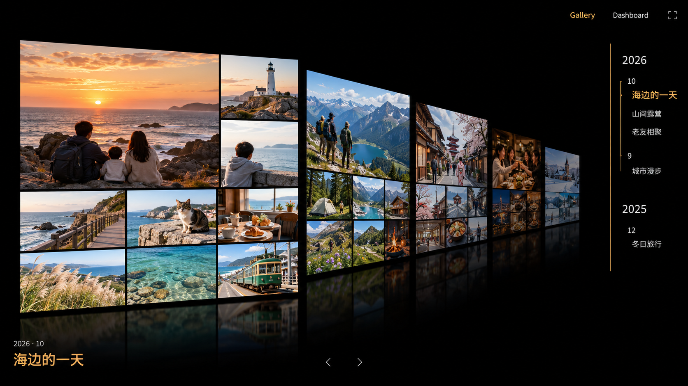

<!doctype html><html lang="zh-CN"><meta charset="utf-8"><meta name="viewport" content="width=device-width,initial-scale=1"><title>Gallery · 三种方向</title>
<style>*{box-sizing:border-box}body{margin:0;background:#000;color:#e9e4db;font:14px system-ui}header{display:flex;gap:10px;align-items:center;padding:16px 24px;flex-wrap:wrap}button{background:transparent;color:#b5ada0;border:1px solid #443824;padding:10px 18px;cursor:pointer}button[aria-pressed=true]{color:#e5ba7c;border-color:#b88b4a}header span{margin-left:auto;color:#9b958b;font-size:12px}main{margin:0 20px}img{display:block;max-width:100%;max-height:calc(100dvh - 140px);margin:auto}p{margin:12px auto;max-width:1100px;line-height:1.7;color:#b8afa2}a{color:#d8ae72}footer{margin:12px 24px;font-size:12px} @media(max-width:700px){header span{margin-left:0}main{margin:0}img{max-height:none}}</style>
<header><button data-i="0" aria-pressed="true">A · 纵深展廊（推荐）</button><button data-i="1" aria-pressed="false">B · 经典 Cover Flow</button><button data-i="2" aria-pressed="false">C · 弧形展墙</button><span>生成概念图 · 示例照片 · 尚未改动正式 Gallery</span></header>
<main><p id="caption">当前画板更正、更大；后方画板分层退入纵深。保留时光隧道方向，最适合在当前实现上继续打磨。</p></main>
<footer><a href="../../research/coverflow-options.md">GitHub 调研与落地判断</a> · <a href="prompts.json">生成提示词</a> · 可按 A / B / C 切换</footer>
<script>const variants=[['A-depth-gallery.png','A：纵深展廊','当前画板更正、更大；后方画板分层退入纵深。保留时光隧道方向，最适合在当前实现上继续打磨。'],['B-classic-coverflow.png','B：经典 Cover Flow','当前活动居中正面，两侧对称退后。最像经典相册选择器，主画板清楚，侧翼会有所遮挡。'],['C-panoramic-arc.png','C：弧形展墙','相邻三场活动沿浅弧大面积展开，遮挡更少。更像环绕展厅，活动之间的主次较弱。']];function select(i){render.src=variants[i][0];render.alt=variants[i][1];caption.textContent=variants[i][2];document.querySelectorAll('button').forEach((b,j)=>b.setAttribute('aria-pressed',String(i===j)))}document.querySelectorAll('button').forEach(b=>b.onclick=()=>select(Number(b.dataset.i)));document.addEventListener('keydown',e=>{const i='abc'.indexOf(e.key.toLowerCase());if(i>=0)select(i)})</script></html>
